Using CDesk
A short tour of the menu bar popover, the Manager window and everything in it.
The menu bar popover
Click the cube icon in the menu bar. A popover, connected to the icon by an arrow, shows the running profile, how much CPU and memory it uses, and your containers. Use it for quick start, stop and restart. Press Cmd-O to open the full Manager.
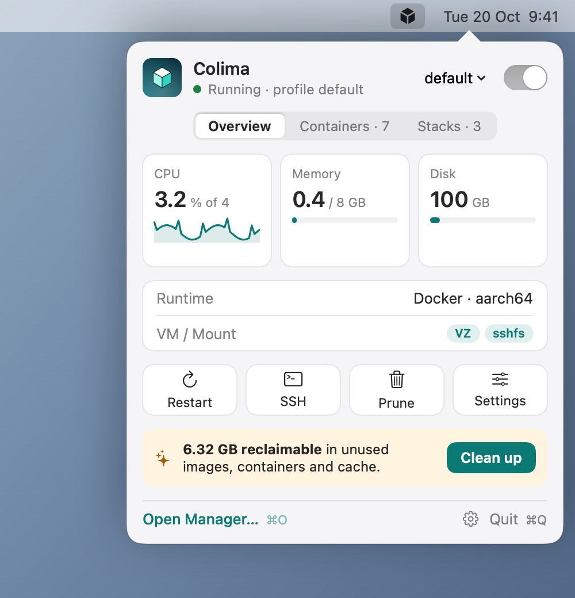
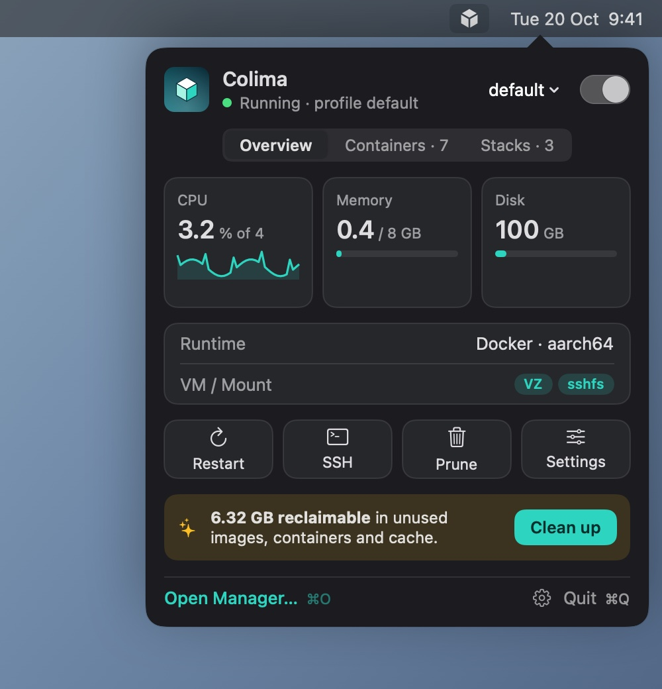
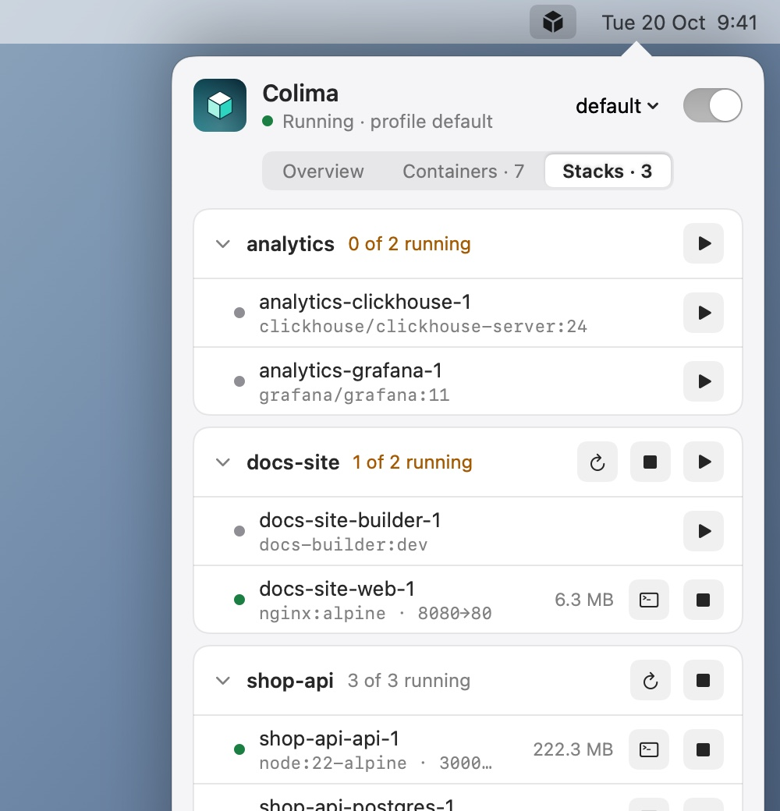
The Manager window
Click the Dock icon, or press Cmd-O in the popover. The sidebar is fixed and collapses to icons. The Overview page draws how it fits together: your Mac, the Docker socket, the Colima VM and the containers inside it. It also shows usage charts and how much space is reclaimable.

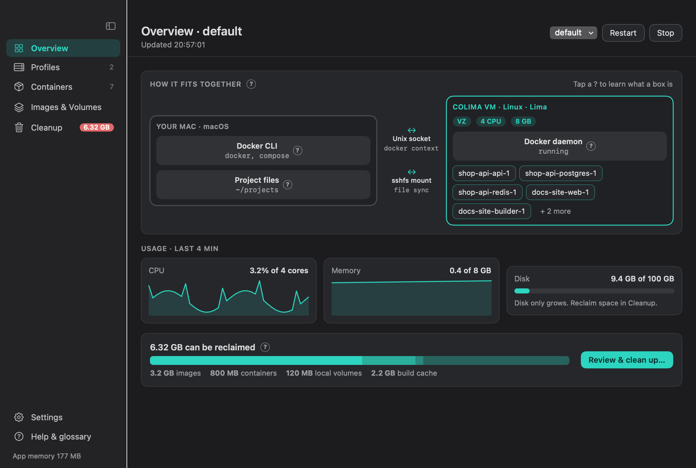
Profiles and settings
A profile is one Colima VM. CDesk shows its options in two groups.
- Locked options (virtual machine type, mount type, architecture, runtime) are fixed at creation. They carry a lock badge. Changing them means delete and recreate.
- Changeable options: CPU and memory change with a restart, and disk can only grow.
Every option has a “?” explanation. The page also has a recommendation banner for your Mac, a bar showing what the VM takes from the Mac, the Equivalent command box (copyable colima start ... flags), an Optimize panel with plain-language advice, and a YAML tab with copy, open and reveal. When you edit something, a pending-changes bar offers Apply & Restart or Recreate VM.
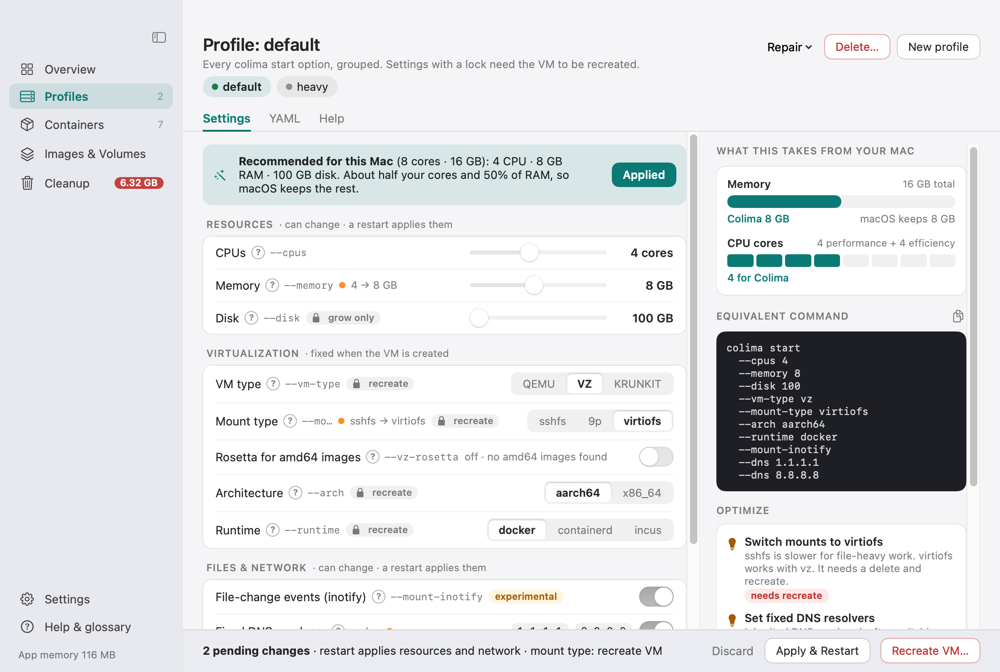
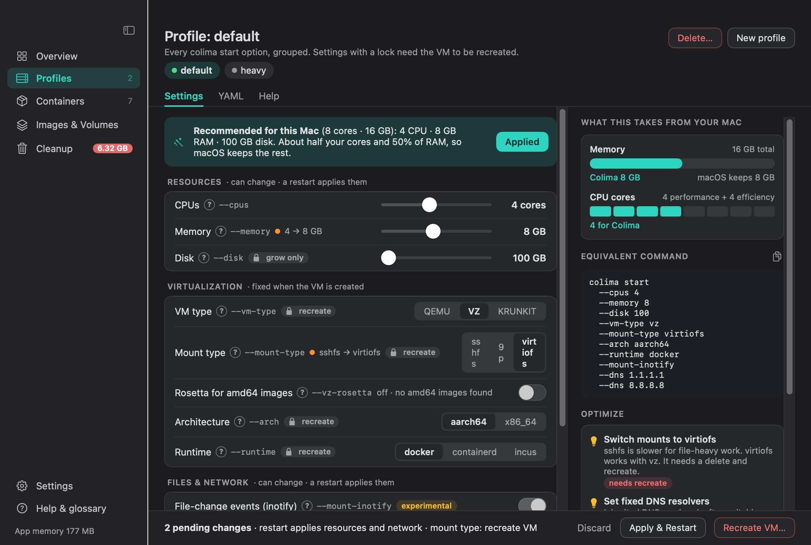
The Recreate flow
Recreate VM opens a right-side sheet. It shows what is kept and what is deleted, offers to export volumes, saves colima.yaml and the image list to ~/Colima Backups/<profile>/, and requires you to type the profile name before it continues. Progress and a notification follow in the background.
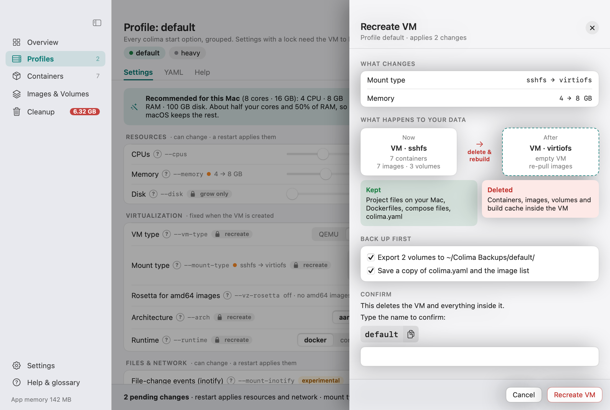
Containers, stacks and shells
- Search, select all with bulk actions, and 25-per-page pagination.
- Copy icons for names and IDs, and a logs panel.
- Each row has a shell button and a context menu: Open Shell, Shell as root, Logs in Terminal, Copy docker exec command, Copy container ID, Restart, Stop and Remove.
- Shells open in your Terminal.app or iTerm2 (your choice in Settings) instead of an embedded terminal.
- Compose stacks are grouped, and you can start, stop or restart a whole stack.
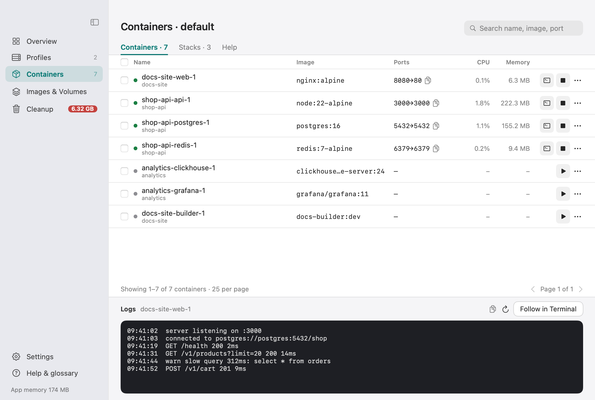
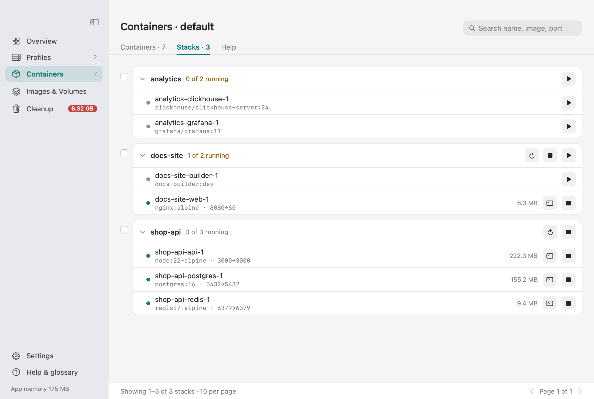
Images, volumes and cleanup
Images show In use, Unused and Dangling badges. You can pull an image, select all unused images and remove them in bulk. The Volumes tab marks volumes as Protected or Unused, and removing one asks you to type its name.
Cleanup shows reclaimable space per type with a prune button each. Pruning unused volumes needs you to type the profile name.
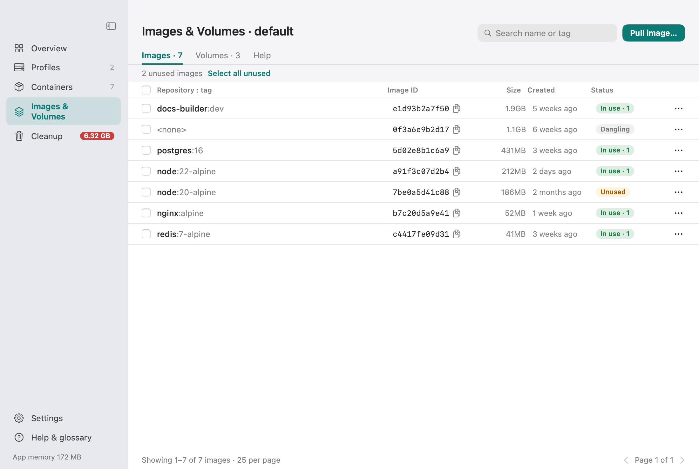
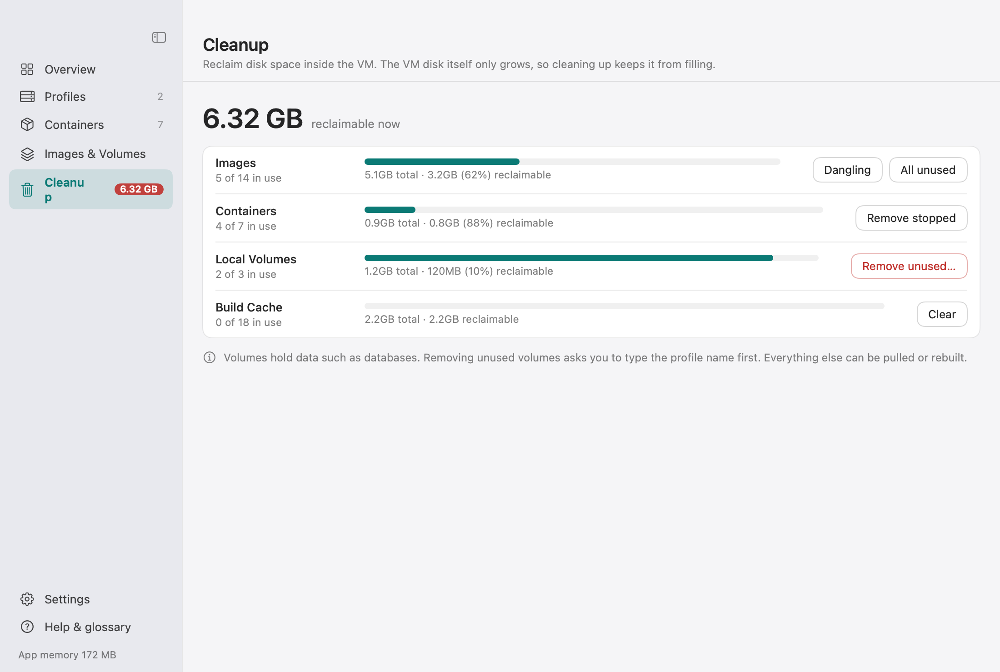
Settings
- Launch at login (on by default, can be turned off), start Colima on open, stop on quit.
- Theme: System, Light or Dark. Dock icon toggle.
- Terminal app: Terminal or iTerm2. Shell: bash, sh or zsh.
- Notifications, refresh interval (2, 5 or 15 seconds) and Docker context switching.
- An Updates tab and an Agents (MCP) tab.
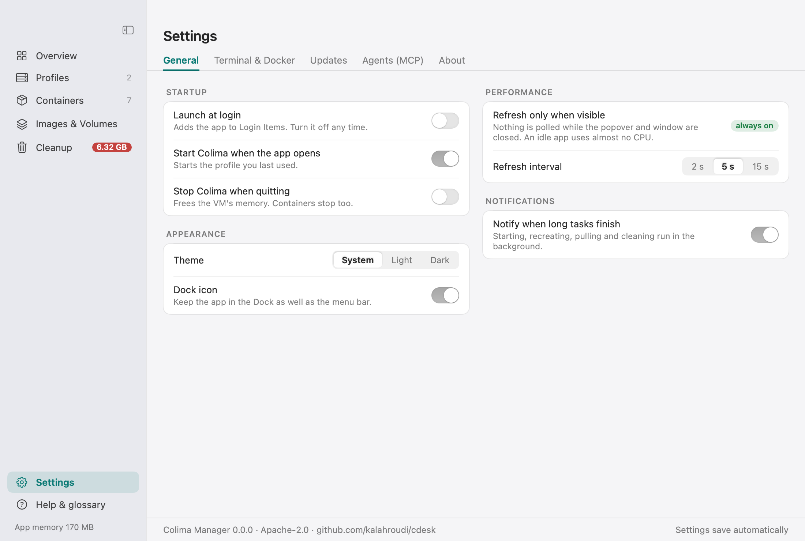
The built-in Help page is a glossary that explains what things are and why.
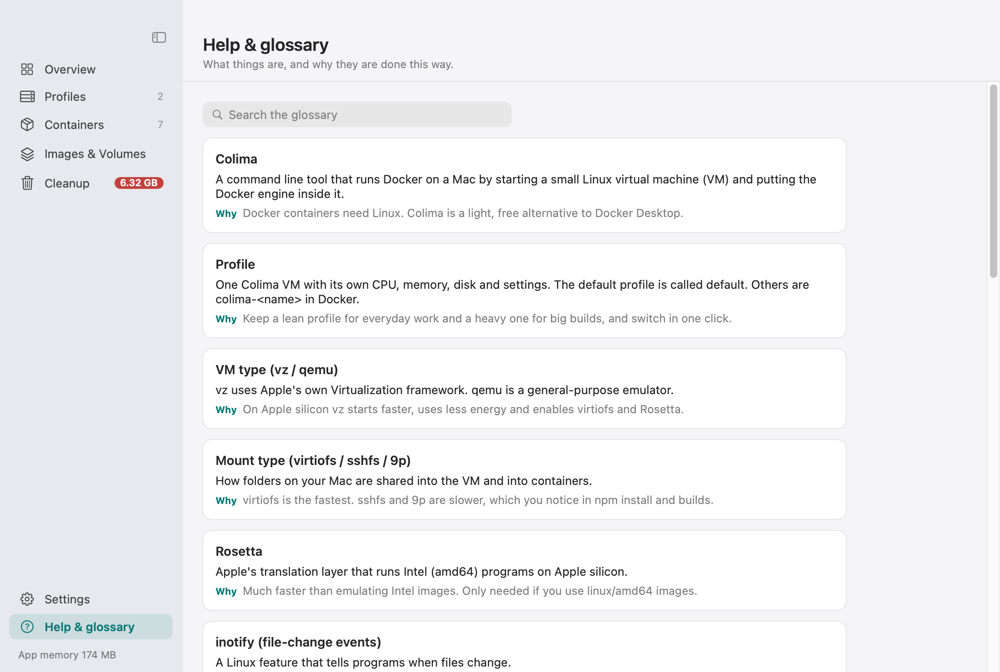
Keyboard shortcuts
| Shortcut | Action |
|---|---|
| Cmd O | Open the Manager from the popover |
| Cmd , | Open Settings |
| Cmd Q | Quit |
Tips
- Destructive actions need you to type a name. Other actions use confirm and cancel.
- Actions open in a right-side sheet that closes when the work is done.
- Keep
~/.colima/<profile>/colima.yamlin your dotfiles. The YAML tab shows it. - Use several profiles: a lean default, a heavy one for big builds and a minimal one for quick tests. Switching profile switches the Docker context in one click.